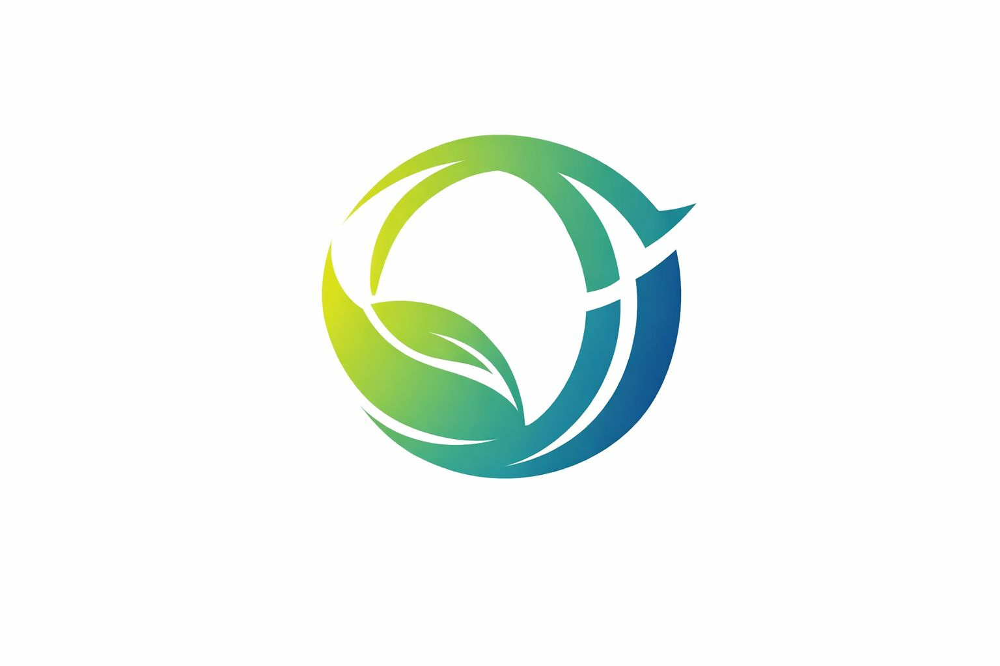
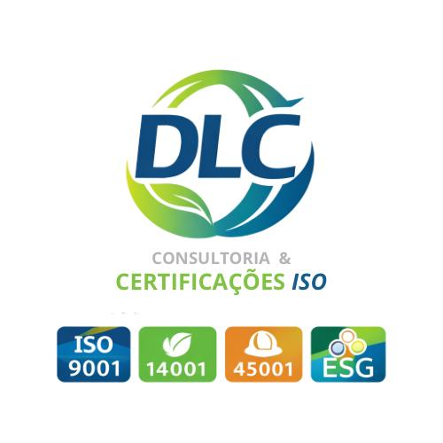

ISO 9001Qualidade

Gestão com clareza. Resultado com método.
Transformamos requisitos em uma gestão que funciona no dia a dia.
Consultoria prática para organizar processos, reduzir riscos e preparar sua empresa para as normas ISO 9001, 14001 e 45001.
Atendimento consultivo, personalizado e alinhado à realidade da sua operação.
Estrutura integrada
SGI
ISO 14001Meio ambiente
ISO 45001Saúde e segurança
Três frentes conectadas por uma gestão mais simples, segura e consistente.
+10anos de atuação comunicada no mercado
Experiência aplicada para transformar normas em processos claros, evidências confiáveis e rotinas que a equipe realmente consegue sustentar.
DLCConsultoria
especializada
especializada
Soluções
Normas que deixam de ser obrigação e passam a orientar decisões.
Estrutura técnica, aplicação prática e acompanhamento próximo em cada etapa.
Gestão da qualidade
ISO 9001
Padronize processos, fortaleça indicadores e crie uma rotina de melhoria contínua.
- Mapeamento e padronização
- Indicadores e análise de desempenho
- Preparação para auditorias
Gestão ambiental
ISO 14001
Identifique impactos, organize controles e integre responsabilidade ambiental à operação.
- Aspectos e impactos ambientais
- Controles e requisitos aplicáveis
- Desempenho ambiental rastreável
Saúde e segurança
ISO 45001
Controle riscos ocupacionais e fortaleça uma cultura de prevenção baseada em evidências.
- Perigos e riscos ocupacionais
- Controles, registros e participação
- Integração com a NR-01

Visão integrada
Uma estrutura de gestão preparada para evoluir.
A DLC também apoia empresas na integração de sistemas de gestão e em frentes que ampliam governança, conformidade e responsabilidade corporativa.
SGQ e SGIESGComplianceNR-01
Método DLC
Da realidade atual a uma gestão pronta para avançar.
Um caminho estruturado, sem soluções genéricas e sem promessas de certificação garantida.
-
01
Diagnóstico do cenário atual
Entendemos processos, riscos, documentos e prioridades.
-
02
Estruturação dos processos
Mapeamos fluxos, responsabilidades e controles necessários.
-
03
Implantação na prática
Transformamos requisitos em rotinas aplicáveis à operação.
-
04
Preparação para auditoria
Verificamos evidências, tratamos lacunas e orientamos a equipe.
-
05
Melhoria contínua
Acompanhamos resultados para o sistema continuar gerando valor.
O que muda
Organização que aparece na rotina e nos resultados.
Quando o sistema de gestão faz sentido para as pessoas, a empresa ganha consistência para decidir, executar e melhorar.
Responsabilidades claras
Cada pessoa entende seu papel e os controles de cada etapa.
Menos falhas e retrabalho
Processos conhecidos reduzem improvisos, perdas e recorrências.
Decisões mais confiáveis
Indicadores e evidências dão base para priorizar ações.
Credibilidade fortalecida
Uma gestão consistente amplia a confiança de clientes e parceiros.
Mariana LimaProprietária e consultora
À frente da DLC
Conhecimento técnico com acompanhamento próximo.
Mariana Lima lidera a DLC Consultoria & Certificações ISO com uma atuação voltada a tornar sistemas de gestão mais claros, práticos e conectados à realidade de cada organização.
O trabalho combina visão integrada, organização de processos e orientação às equipes — do diagnóstico à preparação para auditorias e à evolução contínua da gestão.
Conhecer o perfil de Mariana no LinkedInPróximo passo
Em que estágio está a gestão da sua empresa?
Conte o seu cenário. A DLC ajuda a identificar prioridades e construir um caminho possível.